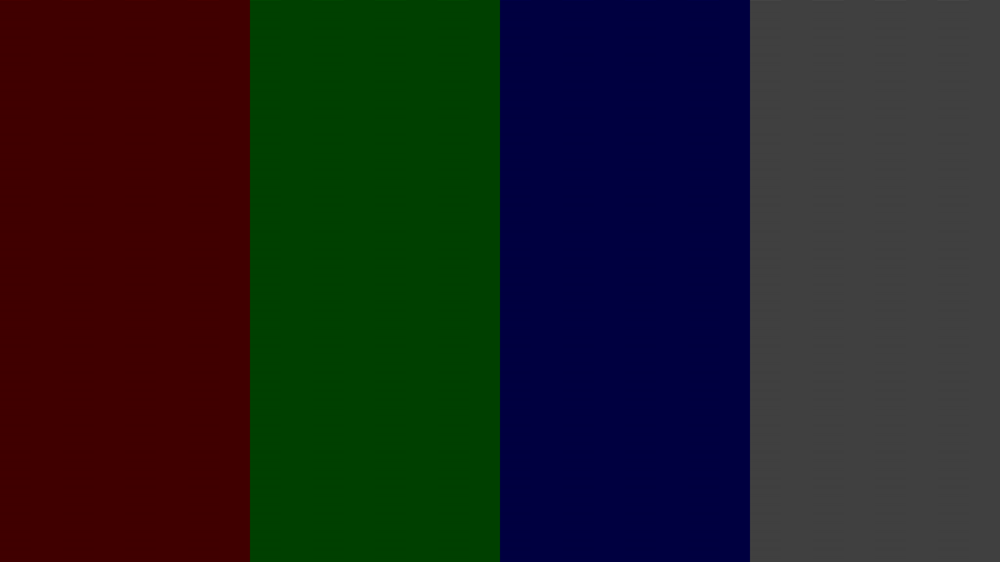

Below is the 10 bit PNG image with Linear gamma profile
Rec2020-elle-V4-g10.icc
The below image has 16 stripes [ 4 of each color ] that consists of alternating
pixels with values A and B(dithered stripe). Next to each of them we have another
16 stripes in which all the pixels are set to (A+B)/2(solid stripe). Since the
image is linear, the optically averaged dithered stripe is physically
identical to the solid stripe. if there is any nonlinearity then, most
likely, the two stripes would have been physically different and the
difference would have been apparent as a difference in brightness.
